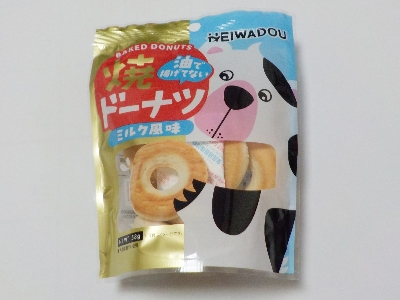
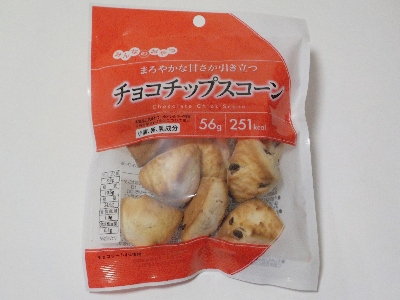

平和堂の油であげてない焼きドーナッツ ミルク風味
更新日 : 2026/03/05

ふっくらしたクッキーのような固いパンのような、玉子ボーロのような焼きドーナッツでした。
新しいような古いような不思議な感覚のお菓子です。
小さくて穴の開いたドーナッツなので軽くて食べやすかったです。
おつとめ品だったので86円でした。
新潟県妙高市白山町3丁目8-27
更新日 : 2026/03/05

ふっくらしたクッキーのような固いパンのような、玉子ボーロのような焼きドーナッツでした。
新しいような古いような不思議な感覚のお菓子です。
小さくて穴の開いたドーナッツなので軽くて食べやすかったです。
おつとめ品だったので86円でした。
更新日 : 2024/04/20

ふっくらしたチョコチップクッキーだなと思いました。
スコーンはパン屋さんやお菓子屋さんにあって、高級なモノのイメージがありますが、これはお手軽にスコーンが食べるのでいいですね。